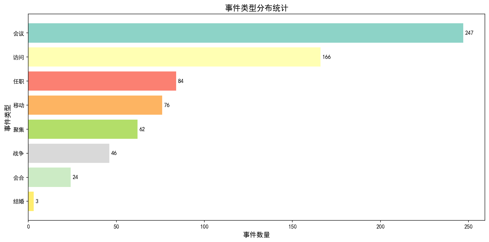
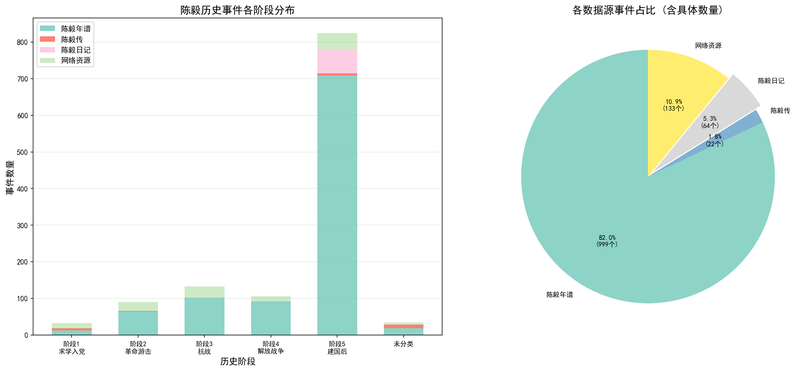
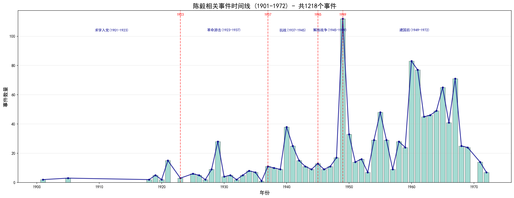
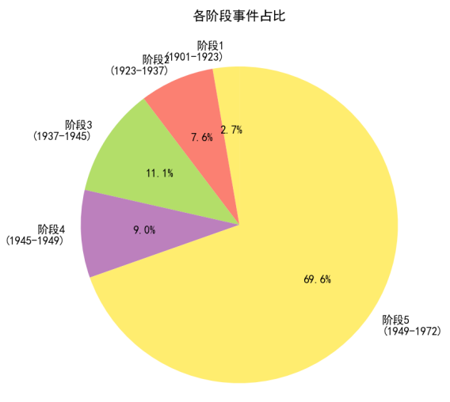
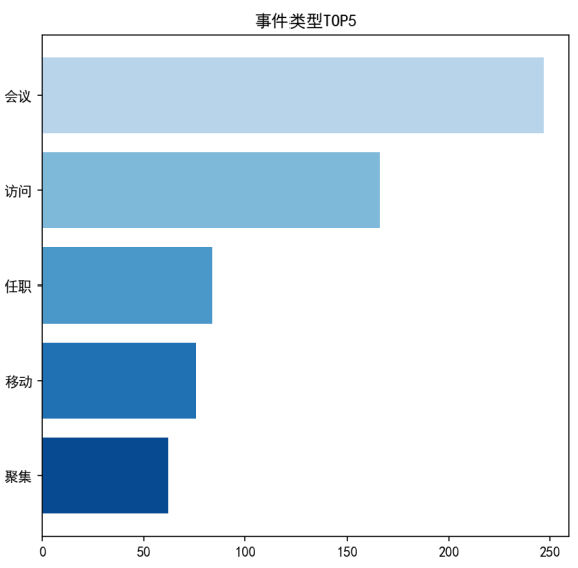
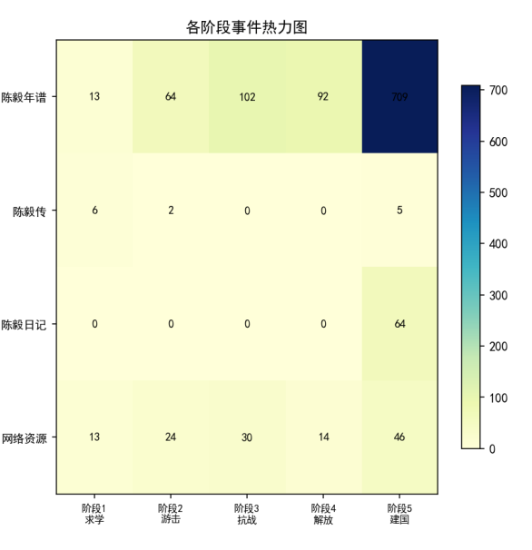
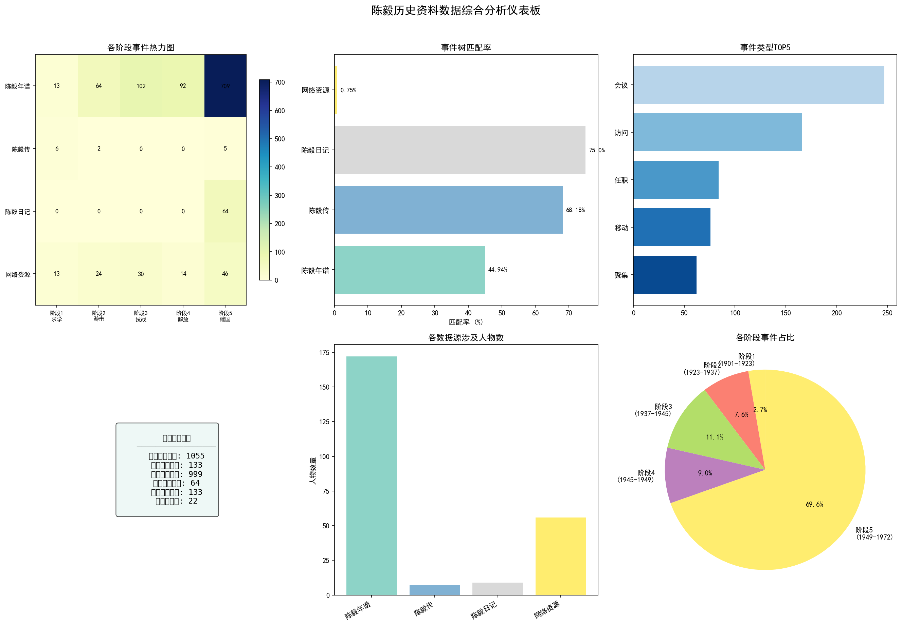
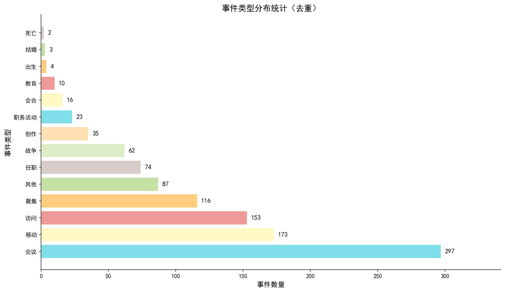
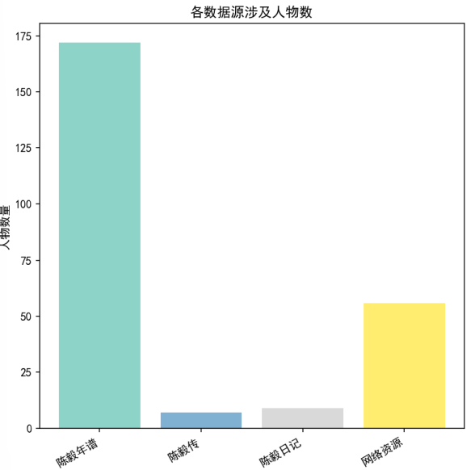

展示陈毅生平事件的数据统计分析图表
本部分基于陈毅生平事件数据集，通过多种可视化图表展示事件分布、类型统计、时间线分布等分析结果。数据集包含1901-1972年间陈毅元帅的主要历史事件，涵盖五个历史阶段：早年求学、武装革命、新四军抗战、解放战争、外交建设。
点击下方卡片标题即可查看对应的分析图表，图表内容基于实际数据生成，反映了陈毅历史事件的分布特征和统计规律。








